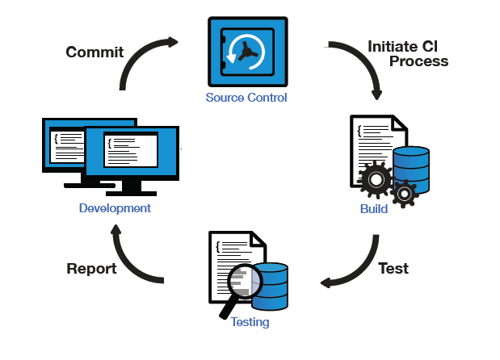
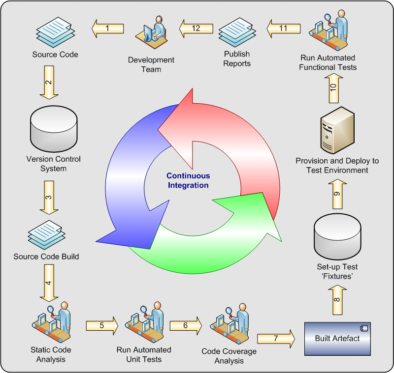

Documentación
Artículos y libros sobre Integración y Despliegue Continuo
Artículos
Calidad e Integración Continua. Una introducción.
Artículo relacionando la calidad, la integración continua y las metodologías ágiles
Integracion Continua
Pequeña introducción a la integración continua
Integración continua
Documentación sobre un curso presencial que impartí en el CEFIRE de Cheste. Contiene principalmente explicación sobre herramientas de software
Continuous Integration
Artículo de la Wikipedia ,en inglés, sobre integración continua.El de castellano no dice prácticamente nada.
Continuous Integration
Articulo de Martin Fowler sobre Integracion Continua. Escrito en 2006 en los inicios de la integración continua
Delivery Guide
Información de Martin Fowler sobre despliegue continuo.
Integración Continua: ¿Qué es?
Pequeña introducción en JavaMéxico
Libros
Continuous Integration: Improving Software Quality and Reducing Risk
Libro sobre integración continua. Este libro pertenece a la serie
Martin Fowler Signature Series
Continuous Delivery: Reliable Software Releases through Build, Test, and Deployment Automation
Libro sobe despliegue continua. Este libro pertenece a la serie
Martin Fowler Signature Series
Jenkins: The Definitive Guide
Libro sobre Jenkins
Maven: The Definitive Guide
Libro sobre Maven
Recipes for Continuous Database Integration
Libro sobre integración continua en la base de datos
Software de Testeo
JUnit
Framework para el esteo automático de software
TestNG
Otro framework de testeo automático de software
mockito
Framework que ayuda a JUnit a testear el software
DBUnit
Framework que ayuda a JUnit a testear aplicaciones de base de datos
Software de Integración de Bases de datos
flyway
Herramienta para la migración de bases de datos en Java
liquibase
Herramienta independiente de la base de datos para gestionar los cambios.
dbdeploy
Herramienta para la gestión de cambios en la base de datos
DbMaintain
Herramienta que habilita el despliegue automático de actualizaciónes en bases de datos
SchemaSpy
Generación el HTML de documentación para la base de datos
Servidores públicos
Jenkins Apache
Jenkins de los proyectos de Apache
Jenkins Cyanogenmod
Jenkins de la ROM de Android Cyanogenmod
Bamboo (como Jenkins) Spring
Bamboo (similar a Jenkins) de los proyectos de Spring
Sonar Spring
Sonar de los proyectos de Spring
Sonar Apache
Sonar de los proyectos de Apache
Sonar
Sonar con varios proyectos open source
Artifactory Spring
Artifactory de los proyectos de Spring
Nexus (como Artifactory) Apache
Nexus de los proyectos de Apache
Bugzilla en varios proyectos
Listado con famosos proyectos que usan Bugzilla
Maven Hibernate
Uso de Hibernate con Maven
Maven Spring
Uso de Srping con Maven

